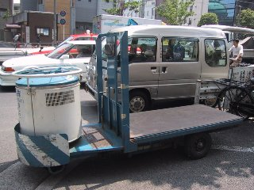

| STIC | : | うおおおっ! OSアイドルWinちゃん、萌え萌え。 |
| ルディア | : | な、なによ、それは? |
| STIC | : | いや、そんなことわどーでもよくてだなぁ……。 |
| ソフィア | : | んざそら。 |
| STIC | : | ワールドカップ日本代表の、というかトルシエのフラットスリーは間違いだ、とかそーゆー話でもないぞ。 |
| ソフィア | : | 誰も、そんなこと話してないってば。 |
| ルディア | : | で、なんだってのよ。 |
| STIC | : | F1、モナコGPだ。 |
| ソフィア | : | もう、一週間も前の話じゃないの。 |
| STIC | : | しょーがないだろ。忙しくて、メールを読むヒマさえなかったんだから。 |
| アリステア | : | まあまあ。 |
| STIC | : | モナコは、なんつ～かベテランのバトルってのを見せてもらったって感じかな。だから逆の見方をすれば、いわゆる一般受けするような「おもしろさ」ってのがなかったような気がする。せめて、モントーヤが残っていてくれれば……と思うが、マシン・トラブルでは致し方あるまい。 |
| ルディア | : | マクラーレンが、らしくないことするからよ。 |
| アリステア | : | ピットインのタイミングを早めに変更したのは、正解でしたわね。 |
| STIC | : | それから、佐藤琢磨。彼のやり方は間違っているとは言わんが、最適解かというととてもそうは思えんぞ。なんでも限界で走ればよい、というものでもなかろう。ましてや前座のレースでクラシックマシンをフリー走行中に壊してしまい、替えのパーツがないから出走自体が不可能になるなんて、どう考えたっておかしいとしか言いようがない。 |
| ルディア | : | F1とは、関係ないけどね。 |
| STIC | : | フリー走行でも限界で走って1コーナーでクラッシュしたりとか、限界で走る前にやらなきゃならんことがあるのとちゃうの? |
| ソフィア | : | 決勝は、ど～なったんだっけ? |
| アリステア | : | フィジケラさんに譲ろうとしてラインを外したところで、スピンしてしまったんです。 |
| STIC | : | 譲る場所を間違えたんだけど、これはルーキーということで初年度のミスは大目に見てもええんちゃう? をれが言っているのは、ルーキーであろうがなかろうが、それはやっちゃいかんでしょうということを、彼はやってしまっているんぢゃないのかってこと。 |
| ルディア | : | でも、それにしたって彼は今年とことん不運よねぇ。 |
| ソフィア | : | まるで疫病神に取り憑かれたみたいね。 |
| アリステア | : | ダ、ダメですよ、そんなことを言っては。(^^; |
| STIC | : | 確かに、一度お祓いしてもらった方がいいかもしれん。ところで、うちのお嫁さんが「TRICK」のDVD(全5巻10話)を借りてきた。 |
| ルディア | : | は? |
| STIC | : | というわけで観ているのだが、いやーおもろいね。 |
| ソフィア | : | はあ。 |
| STIC | : | 以上! |
| ルディア | : | はあっ!? |
| アリステア | : | あ、あの……オチは? (^^; |
| STIC | : | ふむ? 貧乳でも気にするな! かな。 |
| ルディア | : | 百回、死ね(c)1990,POL。 |
| STIC | : | TRICKを観ていたおかげで、ワールドカップを全然観ていない。 |
| ルディア | : | マヌケね。 |
| STIC | : | いや忘れていたんぢゃなくて、知ってはいたけど観られなかったのだ。 |
| ソフィア | : | チャンネル争いに負けたってやつね。 |
| STIC | : | より正確に言うならば、テレビモニターの使用権争いに負けたといったところだな。DVD Videoは、PCでも観られるんでな。もっとも、TRICKの方だって観たかったから別にいいんだけどさ。 |
| アリステア | : | TRICKは、どうでしたか? |
| STIC | : | いや～、とてもおもしろかったぞ。特典映像とかもよくて、値段相応の内容だと思う。んでもって、ワールドカップ。スペイン×スロヴェニアを観たんだが、やはり世界のレベルは違うね。 |
| ソフィア | : | ふ～ん。 |
| ルディア | : | でもさあ、スペインの監督のワキの汗、すごくなかった? |
| ソフィア | : | あー! あれ、きもかった!! デブってたしぃ。 |
| STIC | : | ちみたち、一体どこ見てんねん……。 |
| STIC | : | いよいよ明日は、日本×ベルギー戦! |
| ルディア | : | ぱふぱふぱふ～。 |
| STIC | : | その前に、イタリア×エクアドル。 |
| ルディア | : | あによぉ。 |
| STIC | : | ふみっ。 |
| ソフィア | : | いぃえっ! イタリア戦は大事よっ。なんといっても、トッティだもん!! |
| ルディア | : | そ～いえば、そうだったわよね。トッティ、カッコいいっ! |
| STIC | : | トッティは、どーでもよろしー。それよりも私が言いたいのは、レベルが違うということだ。スペイン×スロヴェニア戦で世界のレベルは違うなどと書いたが、さらにイタリアはレベルが違っていた。終始かけられているプレッシャーが、どうして画面を通して感じられるのか。 |
| ソフィア | : | でもトッティ、カッコい～んだもん。ね～。 |
| ルディア | : | ね～。 |
| STIC | : | あんたらね……。 |
| アリステア | : | そ、そういえば、海外から来ていると思われる方が、あちらこちらで目につくようになりましたね。 |
| STIC | : | そーそー。いかにも道を尋ねたいって感じのジンガイが二人いたんだが、おばちゃんはそのオーラを感じとってススーッとはじっこに避けていったぞ。 |
| アリステア | : | (^^;。 |
| STIC | : | 私の前を歩いていたスーツのおじちゃんなんて、Can you speak English? って聞かれて「No」って答えていたぞ。 |
| ルディア | : | 「No」って、英語なんですけど。 |
| ソフィア | : | で、どしたの? |
| STIC | : | 「どこ行きたいの?」って話しかけてみた。 |
| ルディア | : | おおっ! すごいじゃん。英語で? |
| STIC | : | いや、文字通り日本語で。 |
| ソフィア | : | なによ、それ。 |
| STIC | : | こっちがうまく英語で話せなくても、向こうの英語はなんとなく意味がわかる。あとはこっちがたどたどしくはあっても、いくつかの単語とジェスチャーで説明すればコミュニケーションなんだから意志は通じるって。 |
| ルディア | : | ホントにぃ? |
| STIC | : | そこの角を左だって言ったら、すぐ手前の路地かって聞くから「No. Next Signal CrossをLeft Turnだ」って言ったら通じたって。 |
| ソフィア | : | ウソくさっ。 |
| STIC | : | 橋を渡るってことが伝えたかったんで、最後に「Bridge Over」とも言っといた。 |
| ルディア | : | 無事、目的地に着いたのかしら。 |
| ソフィア | : | さあ……。 |
| STIC | : | ちなみにホテル浦島を探していたんだが、連中が持っていた案内書には地図がなにもなかった。もちっと、親切な書類つくれよ>ホテル浦島。 |
| アリステア | : | も、もしかしたら浦島ではなくて、海外の旅行代理店が作成したのかもしれませんよ。 |
| ルディア | : | まー、浦島だしぃ。 |
| ソフィア | : | 浦島だもんね。 |
| STIC | : | やっと本題。予選リーグ1位通過とか決勝トーナメントでなんちゃらとかマスコミが騒いでいるが、アホちゃうか? まだ1勝だってしたこともないくせに、なにをほざいているのか? 韓国だって、勝ったことないやろが。まずは、1勝することが目標でしょ。というか今回のワールドカップはそれだけだっていいぐらい。それだけとは言いつつ、それが大変なことはちゃんとわかっているんでしょう?? |
| ソフィア | : | はいはい。落ち着いてぇ～。 |
| STIC | : | ま、とにかく、帰宅したらちょうどハーフタイム。後半が始まって、セットプレーから日本が失点してしまう。セットプレーは気をつけないといけないことぐらい、素人の私でもわかるんですけど。スローを見ていると、DFのラインを上げているのが無意味どころか致命的とも思える。やはり、フラットスリーは失敗だったんですよ。 |
| アリステア | : | 直前のホンジュラスとの戦いで、すでに証明されていたと言えるのではないかと……。 |
| STIC | : | それにしてもベルギーDF陣の柳澤に対するファウルを、どうして審判はとらないのだ? |
| ルディア | : | あ! 日本、ゴール。 |
| ソフィア | : | すごい。また入った。 |
| STIC | : | 稲本の2点目は、さすが。しかし追いつかれてしまう。セットプレーは気をつけろっての。またしても、フラットスリー失敗。もはや無意識にDFラインを上げてしまうようでは、救いようがない。 |
| アリステア | : | 稲本さんが、3点目です! |
| STIC | : | よっしゃあああっ! |
| ルディア | : | あれ? |
| ソフィア | : | なにが、どったの? |
| STIC | : | 間接フリーキック? 一体誰が、どんなファウルをしたってんだ?? あのコスタリカの審判は、日本に怨みでもあんのか!? |
| ソフィア | : | 結局、引き分けかぁ。 |
| アリステア | : | で、でも、初めての勝ち点1ですよ。 |
| STIC | : | 勝てる試合だったのになぁ……初勝利のチャンスだったのに。 |
| ルディア | : | また、この次応援しましょ。 |
| STIC | : | 次の試合は、9日の日曜にロシアとかぁ。 |
| ソフィア | : | いぃえっ! 8日のクロアチア戦よっ! |
| アリステア | : | それは、イタリアの試合では……。(^^; |
| ルディア | : | きゃーっ! トッティィィィッ!! |
| ソフィア | : | いや～ん。 |
| STIC | : | いや～ん、な感じ。 |
| STIC | : | んでもって、最後に昨日の韓国×ポーランド。 |
| ソフィア | : | ふ～ん。 |
| ルディア | : | トッティ出ていないから、別にどうでもいいわ。 |
| STIC | : | 喝! 韓国が初勝利したというのに、なんぢゃその態度は!? |
| アリステア | : | スタンドが赤一色で、すごかったですね。 |
| STIC | : | 日本も、ねぼけたことばかり言っていないで、さっさと一勝せい。 |
| ルディア | : | ねぼけたことを言っているのは、マスコミでしょ。日本代表チーム自体は、精一杯がんばっていると思うけど。 |
| ソフィア | : | そーよそーよ。 |
| STIC | : | へい、ごもっとも。 |
| STIC | : | 話は全然変わって、WWWのポータルの話。 |
| ルディア | : | なんの話? |
| STIC | : | その昔、Microsoftのデジタル・ダッシュボードの話をしたと思うが、いつの間にやらMicrosoft SharePoint Serverなるものがあるではないか。 |
| ソフィア | : | なにそれ? |
| STIC | : | かたやLotusには、バックエンドのLotus Discovery Server(LDS)とフロントエンドのKnowledge Navigatorとかがあるんだが、どうやらそれと対抗するものらしい。やっぱり、デジタル・ダッシュボードだけぢゃダメってことに気づいたんでしょーな……というか、はじめからわかっていたけどマーケティングでなんとかするつもりだった。んが、やはりそれは無理だった……とかいう展開というか流れなんぢゃないかな。 |
| STIC | : | ……って、おい。誰も、いねーぢゃねーか。(--; |
| STIC | : | いや～、日本×ロシア。いい試合したぢゃないか。 |
| アリステア | : | 念願のワールドカップ初勝利ですね。 |
| ルディア | : | 今回は日本に有利なジャッジが多かったような気がしない? |
| STIC | : | そうか? ちと、ひやっとするシーンはあったけどな。 |
| ソフィア | : | ペナルティ・エリアの中で、戸田がロシアのフォワードを倒したときでしょ? |
| STIC | : | あれ、ファウルとられていたらPKだろうな。そしたらヤバかった。 |
| アリステア | : | 次はチュニジア戦ですね。 |
| ルディア | : | もしかして、もしかすると。 |
| ソフィア | : | 決勝トーナメント、進出しちゃったりなんかして。 |
| STIC | : | まだ、わからんって。でも、ありえないとも言い切れないな。 |
| ルディア | : | 顔がにやけているわよ。 |
| STIC | : | 問題は、14日金曜の試合が15:00からということだ。社会人は一体どないすりゃええねん!? |
| ソフィア | : | 休んじゃえば? |
| STIC | : | そんなノンキな状況では、あらおまへん。 |
| ルディア | : | 何語よ、それ。 |
| STIC | : | ま、とにかく、ターレットで暴走するぐらいの勢いでゴーゴーだっ! |
| ソフィア | : | ますます意味不明。 |
| ルディア | : | ってゆーか、ターレットってなに? |
| アリステア | : | こんなの(↓)です。 |
|  |
| STIC | : | さて、F1カナダGP。生中継は眠い。 |
| ルディア | : | シューマッハ、やったね! |
| STIC | : | ちゅ～かさ～、最近ウィリアムズの信頼性が低いんちゃう。 |
| ルディア | : | でも、モントーヤがリタイアしなくてもシューマッハは勝ってたよ。 |
| STIC | : | ま～、そ～なんだけど。 |
| ソフィア | : | なんか、不満～って感じね。 |
| STIC | : | そら、そーさー。今年はモントーヤに、もっとブイブイいって欲しかったからな。 |
| アリステア | : | か、過去形ですか。(^^; |
| STIC | : | チャンピョンシップは、もう決まったようなもんでしょ。 |
| ソフィア | : | コンストラクターズなんか、おもしろいんじゃない? |
| STIC | : | ただし、フェラーリ以外のな。ところで話は変わるが、やっぱりLet's note LIGHT(CF-R1PCAXR)はいいな。 |
| ルディア | : | こいつが話を変えるときって、ホント全然関係ない話に変えるわよね。 |
| STIC | : | だから、話は変わると言うとるやろが。 |
| ソフィア | : | また、買うの? |
| STIC | : | いや。前にも同じ話をしたと思うが、VAIO NOTE 505Vを中古とはいえ買ってしまったので、しばらくはおあずけでんがな。 |
| ルディア | : | じゃあ、こんなこと考えない方が精神的にはいいんじゃないの? |
| STIC | : | いいのっ! そこが男のマロンなのっ!! |
| アリステア | : | あ。 |
| ソフィア | : | ん? |
| アリステア | : | 栗きんとんが、食べたくなりました。 |
| ルディア | : | ア、アリステア? |
| STIC | : | またかっ!? |
| ソフィア | : | オチてませ～ん。:-P |
| STIC | : | あいかわらず、このいそがしいのはどーにかならんのか。 |
| ルディア | : | そんなこと、あたし達に言われてもねぇ。 |
| ソフィア | : | ねぇ。 |
| STIC | : | まあとにかく、色々と話したいことがたまっていたんでサクサクいきましょー……とか言いつつ、なんか旬を逃してしまったので半分どーでもよくなりつつある。 |
| ルディア | : | じゃ、別にい～じゃん。 |
| アリステア | : | (ぼそっ)でも、私達の出番が少なくなってしまいます。 |
| ルディア | : | さーっ! ドンドン話しなさいっ!! 今日は特別よ☆ |
| STIC | : | 「特別よ☆」、ぢゃなひ! まあ、よい。まずはワールドカップ予選、日本×チュニジア戦だ。 |
| ルディア | : | 10日も前の話じゃないの。 |
| ソフィア | : | まぁまぁ。 |
| STIC | : | いやでもホント10日も前の話なので、正確かつ詳細な記憶が薄れつつあるのも事実だ。とりあへず勝てたのはいいとしても、チュニジアがかなり弱気で臨んでいたからこその勝利といえなくもないような気がしたのは私だけ? |
| アリステア | : | どうなんでしょうね。 |
| STIC | : | やっぱり、相手をナメてかかってはいかんと思うのだよ。 |
| ルディア | : | でも選手達自身には、そんな気はなかったんでしょ? |
| ソフィア | : | そーそー。 |
| STIC | : | 多分ね。 |
| STIC | : | さて、次。同じ14日の金曜には夕方とてもムカつくことがあったんだが、それわあとで話すとして夜中にCARTをやっていた。第5戦、ラグナセカ。コークスクリュー、うりゃうりゃうりゃあ! だ。 |
| ルディア | : | あいかわらず、なに言ってんだかよくわかんないわねぇ。 |
| STIC | : | 「よくわか」だから。 |
| アリステア | : | それは少々、違うような気が。(^^; |
| STIC | : | まーとにかくタラタラと観ていたんだが、タラタラと観ていたせいかレースがつまんなかったせいか、途中で眠ってしまった。まー、疲れがたまっていたせいもあるとは思うが。 |
| ソフィア | : | 結果は、どうだったの? |
| STIC | : | 結局、いまだに知らんのだ。Webサイトを見ればわかるけど、それさえもどーでもいいって感じ。 |
| ルディア | : | もともと、結果だけよりもレースそのものを楽しみたいタイプだしね。 |
| STIC | : | そのたうり。 |
| STIC | : | で、土日はル・マン24時間レース。圧倒的な強さで、アウディが勝ってしまった。 |
| ソフィア | : | これも、つまんなかったの? |
| STIC | : | 結果だけ見ればそう感じてしまうかもしれないが、レースを観ている分にはそうでもなかったぞ。同じアウディでもチーム剛が入賞圏内をずっと走っていたり、同じくアウディ勢がタイヤバーストしたりとかな。 |
| アリステア | : | 寺田陽次郎さんが、開始早々にリタイアしてしまったのは残念でしたね。 |
| STIC | : | そーそー。あれだって結果から見れば「あにやってんだ」とか思うかもしれないが、放映中のインタビューを聞けばそんな気はまったくおこらないぞ。ちなみに今回のル・マンで番組として一番面白かったのは、あのインタビューだったかもな。 |
| アリステア | : | (^^;。 |
| STIC | : | 17日月曜の朝、サブウェイに電話する。 |
| ルディア | : | なんか、あったの? |
| ソフィア | : | これが一番、おもしろそ～だよねぇ。わくわく。 |
| STIC | : | あんたらね……。えーと、金曜の夕方ハラが減ったので買い出しに行ったのだな。んで人数が多かったので色々と時間がかかって、会計が順番が他の客と前後したんだな。 |
| ルディア | : | まさか、会計の順番をかえられたから文句言ったの!? |
| STIC | : | んなこと、するかーい! レジのにーちゃんは「会計、お待ちください」とちゃんと言っていたし、そのこと自体は全然問題ない。で、全員分の注文も終わったので私はてっきり会計してもいいもんだと思ったのね。 |
| ソフィア | : | 違ったの? |
| STIC | : | そー、違ったの。レジのにーちゃんは、なんか怒ったような態度をとったのね。まるで『客を叱る』かのように「会計は、まだお待ちください」と言ったのよ。 |
| ルディア | : | それは、気にしすぎじゃないのぉ? |
| STIC | : | いやだからそのときは別に、なにも言わなかったよ。まー、会計の順番を間違えたのは私だしね。ただ日本語ってどっちかっていうと内容よりも言い方が問題になるから、そういう言い方ってないんぢゃないの、とは正直感じた。 |
| アリステア | : | むずかしいですね。 |
| STIC | : | いや、それだけぢゃないんだ。クーポン券を使おうとしたんだが、最初に見せろって言うのね。また、その言い方も『本来最初に見せるべきものです。あなたは間違っています』って感じなのよ。 |
| ルディア | : | それも、気にしすぎじゃ……。 |
| STIC | : | さすがにカチンときて、それでも丁寧に「(これからはおっしゃるように最初に見せるようにしますけど、)いままでは最後に見せるように言われていたんですよ」と言ったのね。 |
| ソフィア | : | カッコの中も言ったの? |
| STIC | : | いや、そういうニュアンスが伝わるような言い方をしたってこと。 |
| ルディア | : | 伝わんなかったと思うけど。 |
| STIC | : | もうそんときには、そんなことはどうでもええ状態なの。レジのにーちゃんは、もう一度同じ台詞を繰り返すのね。『一度言っても、わかんないの? 最初に見せろって、言ってるだろ』って感じなのよ。 |
| ルディア | : | だから、気にしすぎだって。 |
| STIC | : | 発言内容そのものは理解できるけど、ふつ～「すみませんが」とか「申し訳ありませんが」とか、なんか付け加えるもんぢゃないのか? とにかく、態度が不遜なんだよ。よくわかっていない客をたしなめてやっている、とでも言わんばかりの対応なんだよ。 |
| アリステア | : | たまたま、そのような対応をしてしまったのかもしれませんし……。 |
| STIC | : | いや、それが違うんだよ。以前、ウェットティッシュがなかったとき、レジまで取りに行ったことがあるのね。そのとき、逆に「トレーにありませんか」って言われたの。『こっちは、ちゃんと渡したんだよ。トレーにあるはずだから、ちゃんと探せよ』って感じの言い方すんだよ。ちゃんと探してなかったからレジに行ったのに、そんな言い方されたのでカチンときて、「いや、なかったので――」と言ったら「すみません」もなにも言わずに渡した前科があんのよ。 |
| ソフィア | : | その人、ブラックリストに載ってたりするかもね。 |
| ルディア | : | あたしは、STICの方がブラックリストに載ってるんじゃないかと思うけど。 |
| STIC | : | 話をレジ前まで戻して、こっちもここまで話が進むとかなり頭に血が上っていたもんで、もう一度同じことを言ったのよ。こっちには、落ち度はないつもりだってことを主張するつもりでね。 |
| ルディア | : | そしたら? |
| STIC | : | 同じ台詞を、繰り返すだけなの。三回目だぜ。こりゃあ話にならんと思って切り上げたんだけど、せめて名前だけでも確認しようと思ったら、名札のプレートが見えないように付けているんだよ。 |
| ソフィア | : | おっと、確信犯か。 |
| STIC | : | さらに部屋に戻って来て、ビックリ。ポテトが、一つ足りねーでやんの。自分の仕事もキチンとできていないのに、客にエラそうな態度をとるとは何事か。客に説教するヒマあったら、ちゃんとポテト入れろ。 |
| ルディア | : | それは、マズイわね。 |
| ソフィア | : | それで、電話したの? |
| STIC | : | そのたうり。 |
| アリステア | : | 電話対応の方は、どうでしたか。 |
| STIC | : | こちらは、まったく問題なし。誠実な対応をしてくださった上、とっても恐縮していたので逆に私が悪者のように感じてしまった。 |
| ルディア | : | いや、悪者だし。 |
| STIC | : | なんでやねん! |
| ソフィア | : | ちなみに、どこのサブウェイ? |
| STIC | : | 川崎ルフロン店。多分、夕方のシフトだと思うけど、眉毛のやや濃い背の高いにーちゃんは気をつけた方がええぞ。(--# |
| STIC | : | んでもって決勝トーナメント1回戦、日本×トルコ。 |
| ルディア | : | 負けちゃったね。 |
| ソフィア | : | 残念だったね。 |
| アリステア | : | でも、よくがんばったと思います。 |
| STIC | : | 個人的には、結果は致し方ないところだと思う。事実としてトルコは強いんだろ。少し残念なのは、トルコは強いから日本は負けるんだ、みたいな感じで試合に臨んでいたようなプレイが感じられたこと。 |
| ルディア | : | そんなことないんじゃないの。 |
| STIC | : | もちろん、そうなんだろうけどな。そしてとっても残念なのは、テメーらで勝手に興奮しておきながら「せっかく応援したのに、負けちまってどーしてくれるんだよ」と怒っていたバカ。百回、死ね(c)1990,POL。 |
| ソフィア | : | いろんな人が、いるのねぇ～。 |
| STIC | : | んでもって、うちに帰ってきたらイタリア×韓国をやっていたのね。イタリアが勝っていたから、このままいくでしょーとか思ってチャンネルかえたんだ。で、もう試合終わったかな～と思ってチャンネルを戻したら、1対1で後半がちょうど終わるところでやんの。 |
| アリステア | : | あの試合は、すごかったですね。 |
| STIC | : | そして延長後半、韓国のゴールデン・ゴール。マジですか!? って感じ。 |
| ルディア | : | そしてペルージャ解雇、と。 |
| ソフィア | : | あれは、かわいそぉだよぉ～。 |
| STIC | : | ってゆーか、解雇自体は大人げないだけだから別にどーでもいーんだけど、ちょっとアジアを差別しているかのような発言はどーかと思うぞ。 |
| アリステア | : | そういえば、ありましたね。 |
| ルディア | : | カネを与えてやって、やっとマトモな人間らしい生活をさせてやったのに、とか言ってたんでしょ? |
| STIC | : | 準決勝から審判はヨーロッパの人間にするとか、まるでアジア・アフリカ・中南米の審判は必ず買収されるみたいぢゃないか。バカにしているよなあ。これは、れっきとした人種差別だぞ。 |
| ソフィア | : | でも、何人かの審判は認めているんでしょ? |
| STIC | : | それは誤審だろ。よしんば買収だったとしても、買収される可能性があるのはヨーロッパだって同じ。確かに、国際試合の経験が豊富という点は認めるがね。 |
| アリステア | : | 誤審といえば……。 |
| ルディア | : | スペイン×韓国。 |
| STIC | : | むむ……確かにあれわ、ちと首をかしげるシーンが多々あったな。特にゴール・ラインぎりぎりのところからのセンタリングは、ラインを完全にわっていなかったと思うぞ。 |
| ソフィア | : | あと、フリーキックからのヘディング・シュートのやつ。 |
| STIC | : | あれわジャンプを押さえつけた、という点でファウルそのものは誤審ではない。ただ、あえてあそこで指摘するのは……と勘ぐってしまうのは私だけではないはずだ。 |
| ルディア | : | なんだか、すっきりとしないわよねぇ。 |
| STIC | : | 私の予想というか希望では、そろそろ韓国は負けてもらわないと、ますます疑惑を深めてしまう上にワールドカップそのものが少なくともヨーロッパ方面から興ざめという事態になりかねない。 |
| アリステア | : | そ、それもどうかと……。(^^; |
| STIC | : | F1、ヨーロッパGP。つまらん! |
| ルディア | : | え～、なんでよぉ～。もしかして、シューマッハが優勝しなかったから? |
| ソフィア | : | フェラーリ、ワンツーよ。 |
| STIC | : | 一体モントーヤは、なにをやっているのかね! 不甲斐ない。フェラーリも、いっそのことチームオーダー出してシューマッハを勝たせろや。 |
| アリステア | : | オーストリアの裁定がまだ出ていませんから、冒険できなかったのでしょうね。 |
| STIC | : | だから、そんなんでビクビクするんだったら最初からするなっつーの。 |
| ルディア | : | しょ～がないじゃないの。タイトルを獲るためなんだから。 |
| ソフィア | : | でも、あたしはあんましスキじゃないなぁ。今回はバリチェロがあのまま勝ってくれて、なんだかうれしかったもん。素直に「おめでとう☆」って言ってあげたいなぁ～。 |
| STIC | : | それにしても、一体モントーヤはどうしてしまったんだ!? ブツブツ……。 |
| ルディア | : | そこっ! ブツブツ言わないのっ。 |
| アリステア | : | ライコネンさんて、格好いいですね……。 |
| ルディア | : | ア、アリステア? |
| STIC | : | ああっ! チカちゃん、かわゆい。 |
| ルディア | : | 大丈夫か、こやつは。 |
| ソフィア | : | ってゆ～か、この壁紙は……。 |
| アリステア | : | ま、まだゲーム自体は買っていませんから。(^^; |
| ルディア | : | アリステアがフォローしてあげることなんか、ないのよ。 |
| ソフィア | : | ってゆ～か、そのうち買うんじゃないのぉ? |
| STIC | : | さすがに、いまさらそれはないと思うが。とりあへず、:P(藤原々々さんのWebサイト)を追加(どこに?)。ちなみに、ここから探しました。以上! |
| ソフィア | : | 「以上!」って、オチはぁ? |
| STIC | : | んなもん、あるかい。はぁぁぁ～、チカちゃ～ん。 |
| ルディア | : | 死ぬまで、ほっときましょ～。 |
| アリステア | : | 「死ぬまで待とう、ホトトギス」ですね☆ |
| ルディア | : | ア、アリステア? |
{kind=link}